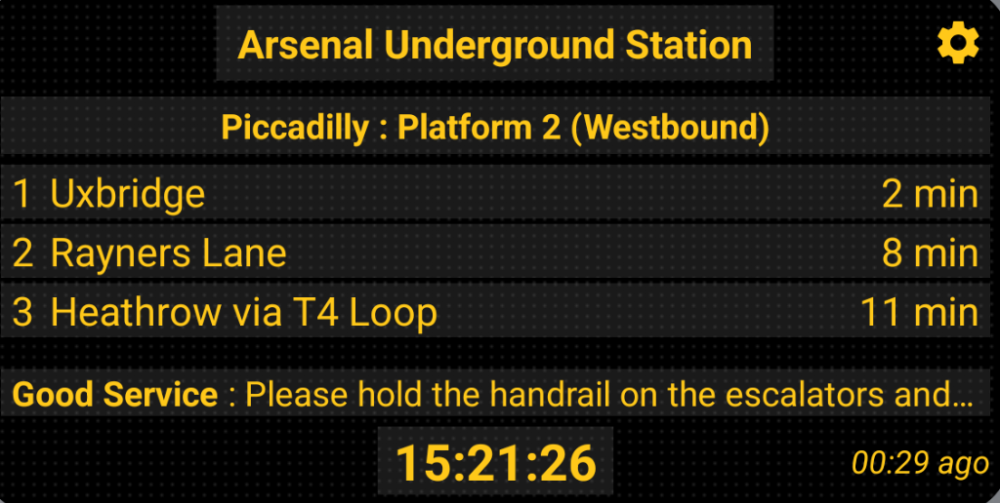

The only departure
board you need.
Live TfL departures on your home screen widget. Just glance at your phone — no tapping, no unlocking, no apps to open.

No faff. No filler.
Just your next train.
Everything a London commuter actually needs. Nothing that gets in the way.
Your platform. Right now.
Live departure times across every TfL line — Tube, Overground, DLR, Elizabeth line, bus. Updated every few seconds from the source.
Lives on your home screen
The widget shows your board before you even unlock your phone. Set it once, forget about it. It just works, every morning.
Know before you leave
Disruption on your line? You'll know before you've put your shoes on — not when you're already at the gates.
Three steps.
That's genuinely it.
Pick your station
Search 270+ tube and rail stations, or 20,000+ bus stops. Choose your line, platform, and direction — every TfL mode covered.
Add the widget
Long press your home screen, tap Add Widget, choose Stationly. Done in under 10 seconds.
Just glance
Look at your home screen. See the next departure. No tapping, no unlocking. Sprint or stroll — your choice.
We're not trying to be the next big super-app. We just want to know if the Northern line is suspended again before we've already walked to the station.
— The Stationly team, speaking for every London commuter ever
Be the first to board.
Stationly is launching in 2026. Drop your email and we'll let you know the moment doors open.
Stationly Developer API
Real-time TfL departure data — clean JSON, no wrappers, no nonsense. Base URL: api.stationly.co.uk
curl https://api.stationly.co.uk/departures/940GZZLUPAC \
-H "Accept: application/json"Want to use our API? The public endpoints are open to explore. For dedicated access, higher rate limits, or integration support — just reach out at support@stationly.co.uk and we'll get you sorted.
Got a question?
Widget playing up? Something not showing right? Or just want to tell us what you think? We're one email away.
Common questions
All of them. Stationly covers the full TfL network — London Underground, Overground, DLR, Elizabeth line, National Rail services within London, and buses. If TfL has live data for it, Stationly shows it.
Yes — Stationly covers over 20,000 TfL bus stops across London. Live countdowns, route numbers, and destination boards. Just like at the real stop, but on your home screen.
This is usually caused by battery optimisation settings restricting background processes. Go to Settings → Battery → Battery Optimisation and set Stationly to "Not optimised". You can also tap the refresh icon directly on the widget to force an update.
Stationly pulls data directly from TfL's Open Data APIs — the same source used by official TfL apps and journey planners. Departure times are as accurate as TfL's own systems. The timestamp on every board shows exactly when the data was last refreshed.
Departure times require a live connection — there's no way around that, since the data is real-time. If you go offline, the widget shows the last known times with a timestamp so you know how old the data is.
Stationly is mobile-first — iOS and Android. Sign up on the home page and we'll notify you the moment it's available to download.
Open the app, tap the pencil icon, and add as many boards as you want. Each board can track a different station, platform, and direction. You can then swipe between them on the widget.